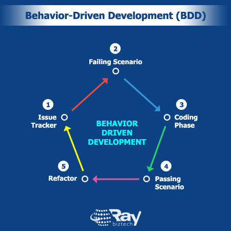

BDD keskendub tarkvara käitumise kirjeldamisele kasutaja ootuste ja ärilisest vaatenurgast. Võetakse arvesse nii arendaja kui ka kasutaja seisukoht.
Parandab suhtlust osapoolte vahel. Keskendub kasutaja olulistele funktsioonidele.
Vajab ettevalmistamist ja tiimide head kokkutöötamist. Raske ette arvestada projekti suunda.
SpecFlow: on avatud lähtekoodiga testimisraamistik .NET-rakenduste jaoks.
